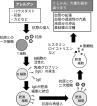

2026年
問題28 アレルギーに関する次の記述のうち，最も不適当なものはどれか．
(1)アレルギーとは，特定の抗原に特異的に結合する抗体が体内に生 じた状態で，再度，抗原が体に侵入した際に引き起こされるヒトに有害な免疫反応のことをいう．
(2)過敏性肺炎は，血清中の抗体と抗原の複合体と，リンパ球自体によるアレルギーの両者により発生すると考えられている．
(3)気管支喘ぜん息の原因となるアレルゲンとしては，室内に存在するハウスダストや，その成分でもあるヒョウヒダニ属由来のものが最も多い．
(4)金属アレルギーは，金属が汗などの体液に触れてイオン化し，体内のタンパク質と結合してアレルゲンとなることにより発症する．
(5)換気装置肺炎は，空気調和設備や加湿器に供給される水道水の残留塩素を反復吸入することにより発症する．
2026年
問題28 正解（5） 頻出度AAA
水道水の残留塩素が過敏性肺炎の一種である換気装置肺炎の原因となることはない．
過敏性肺炎は，有機粉じんの吸入により起こるアレルギー性の疾患である．他にも，アスベスト，窒素酸化物，二酸化硫黄が過敏性肺炎の原因として出題されたが，これらも誤りである．
過敏性肺炎は，肺の間質（肺胞，気管支，毛細血管を取り囲んでつなぐ組織）に病変がおきる間質性疾患である．
過敏性肺炎は血清中の特異抗体が関与するⅢ型※アレルギー（急性），リンパ球自体が主導するⅣ型※アレルギー（慢性）の両者が混在・重複して発生すると言われている．
家庭やオフィスで加湿器や空気調和設備に増殖した好熱性放線菌や真菌その他の粒子が抗原となるので，換気装置性肺炎，加湿器肺とも呼ばれる．特に夏に増殖する，高温高湿で日当たりが悪く，換気状態の悪い家屋で増殖する真菌（トリコスポロン）によって発症するものは夏型過敏性肺炎と呼ばれる．
発生時の対策と予防上最も重要なことは，環境からの抗原の除去であり，そのために貯水槽やフィルタの清掃や消毒を頻回に行い，空気調和設備や加湿器が微生物で汚染されるのを防止する．
ある個体に特定の抗原（体内に侵入した異物＝アレルゲン）によって，その抗原に特異的に結合（攻撃）する抗体（免疫グロブリンと呼ばれる蛋白質）やリンパ球（白血球球の一種）が体内に生じる．これを抗原抗体反応，あるいは免疫反応という．そのうち人に有害な免疫反応をアレルギーと呼んでいる．
アレルギーはそのメカニズムや潜伏期間などによってⅠ〜Ⅴ型に分類されている．花粉症，じんましん，アトピー性気管支喘息，アナフィラキシーショックなどはみなⅠ型アレルギーである．
-(1) アレルギー（Ⅰ型）発症のメカニズムについては，2026-28-1図参照．

抗原との二次接触でアレルゲンが肥満細胞に結合し，さらに抗体（IgE，免疫グロブリンE）が結合すると，肥満細胞からヒスタミン等の化学伝達物質が放出される．それらの化学伝達物質は，血管の透過性を増し，気管支壁にある平滑筋を収縮させ，気管支の内腔に分泌される粘液を増加させ，白血球を集める作用がある．アレルギー性鼻炎で鼻汁やくしゃみが出たり，気管支喘息で呼吸困難発作が起きるのは，この反応による．